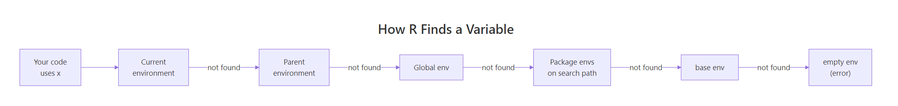
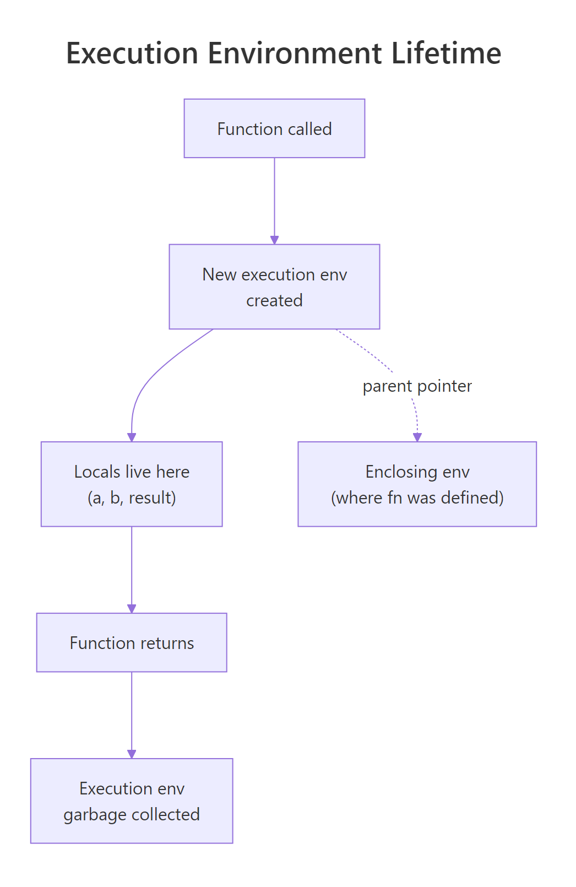
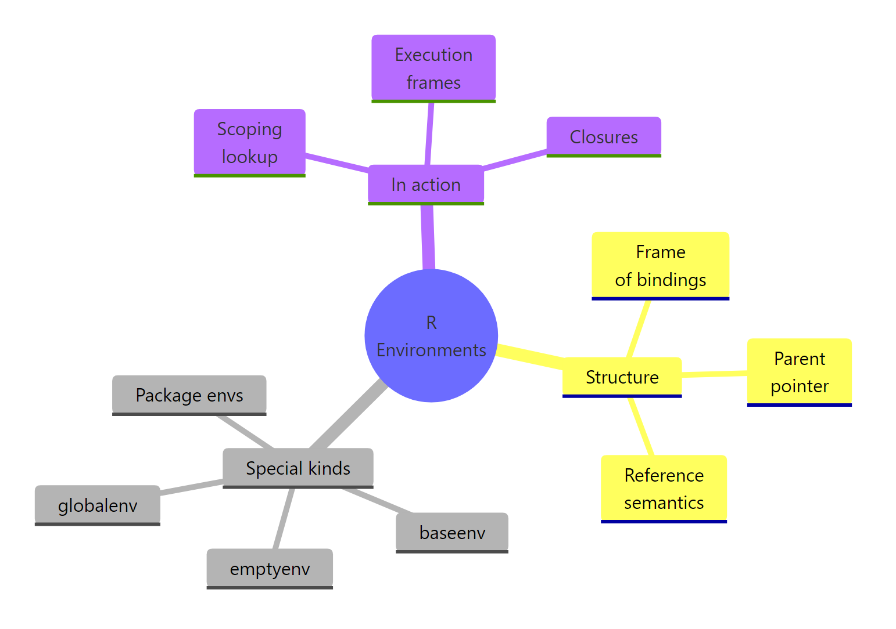

R Environments: The Missing Piece That Makes Scoping, Closures & NSE Click
An R environment is a named bag of variables plus a pointer to a parent environment. That tiny structure is how R finds every variable you use, how closures remember state, and how packages keep their functions from colliding, master it and R stops feeling magical.
Most R users never think about environments. You type x <- 5, and x just exists. You call a function from a package, and it just works. But every one of those lookups walks a chain of environments behind the scenes. Once you can see that chain, scoping, closures, and namespaces all click into the same picture.
What is an R environment?
Think of an environment like a named list with one extra field, a parent. When R looks up a variable, it peeks at the current environment's bindings first, then follows the parent pointer, then the parent's parent, and so on. The fastest way to see that structure is to build one with rlang and print it.
env_print() shows the two things that define every environment, the bindings (name → value pairs) and the parent pointer. Here the parent is emptyenv() because we created the environment from scratch. env_names() returns only the names, not the values, because an environment is a set, not a sequence.
new.env(), ls(), get(), and assign(), all fine. The rlang package wraps them with a consistent env_* API and a friendlier printer. We'll use both styles in this tutorial.Try it: Build an environment called ex_env holding a = 1, b = 2, c = 3, and print its names.
Click to reveal solution
Explanation: new_environment() takes a named list and turns each element into a binding inside the new environment.
How does R find a variable?
When a function references a name it didn't define itself, R doesn't give up, it walks the chain of parent environments until it either finds the name or runs out of parents. That walk is called lexical scoping, and every R expression depends on it.
When show_x() runs, R can't find x in the function's own (empty) execution environment, so it follows the parent pointer to globalenv(), finds x = 100, and prints it. search() shows the whole ladder of parents, your global workspace first, then each attached package, ending in base. Figure 1 traces that walk from your line of code all the way down.

Figure 1: How R walks the parent chain to resolve a variable name.
emptyenv() and throws object 'x' not found.Try it: Call search() and count how many environments R would walk through before hitting package:base.
Click to reveal solution
Explanation: search() always ends in "package:base". The count depends on how many packages you've loaded, WebR typically starts with a handful.
What are the four special environments?
R keeps four environments that every session has by name. You'll meet them in error messages, stack traces, and namespace warnings, worth knowing them on sight.
globalenv() is where your assignments land when you type at the console. baseenv() holds the base R functions, sum(), c(), function() itself. emptyenv() is the "null" of environments: every parent chain eventually reaches it, and it alone has no parent of its own. Package environments sit between globalenv() and baseenv(), one per attached package.
parent.env(emptyenv()) throws. This matters when you write code that walks parent chains: your stopping condition must be identical(e, emptyenv()), not "until parent.env() fails".Try it: Print the parent of baseenv() and confirm it is emptyenv().
Click to reveal solution
Explanation: baseenv()'s parent is always emptyenv(). That's the invariant that anchors the whole search path.
What happens inside a function call?
Every time you call a function, R creates a brand-new environment to hold its arguments and locals, runs the function body against it, and throws it away when the function returns. That temporary home is called the execution environment, and it's why local variables never leak between calls.
Inside f(), environment() returns the execution environment that R just built to run this call. Its parent is globalenv(), the environment where f was defined, not wherever f was called from. That distinction is the heart of lexical scoping: a function sees the variables that surrounded its definition, not its caller. Figure 2 shows the lifecycle.

Figure 2: A function call creates a new execution environment whose parent is the enclosing env.
f() returns, its execution environment has no references left, so R collects it. That's why you can call the same function a million times without leaking memory.Try it: Write a function ex_show_locals() that defines two variables and prints ls(environment()).
Click to reveal solution
Explanation: environment() inside a function returns that call's execution env. ls() on it lists the locals in alphabetical order.
How do environments enable closures?
A closure is a function that remembers the environment where it was defined. Because R ties a function's parent pointer to its birth environment, a function can carry private state with it, even after the factory that created it has finished running. This is how stateful helpers like counters, caches, and progress bars work.
make_counter() creates a local count and returns an inner function. That inner function's enclosing environment is the execution environment of make_counter(), and because the inner function is still holding a reference to it, R doesn't garbage-collect it when make_counter() returns. Each call to tally() finds count in that captured environment and bumps it with <<-, the super-assignment operator that climbs the parent chain until it finds an existing binding.
<<- climbs the parent chain until it finds an existing binding with that name, and modifies it. It only lands in globalenv() if no parent has the name, which is why closures can hold local mutable state without polluting the workspace.Try it: Write ex_make_adder(n) that returns a function adding n to its input. Call it with ex_make_adder(5)(10).
Click to reveal solution
Explanation: The inner function captures n from ex_make_adder's execution environment. When add_five(10) runs, R looks up n in that captured environment and finds 5.
How do you inspect and manipulate environments in practice?
Environments are the only R data structure with reference semantics, assigning one environment to another name does not copy the contents. That makes them perfect for shared mutable state (caches, counters, registries) but also a common source of bugs for readers expecting copy-on-modify.
Writing to cache2$new_key mutates the one shared environment, so cache sees it too, there's only one bag, and cache and cache2 are two labels on it. env_clone() is the escape hatch when you actually want a fresh copy with the same bindings at the moment of cloning.
env_clone() to defend against that.Try it: Add a new binding capital <- "London" to cache and verify it shows up in cache2.
Click to reveal solution
Explanation: Because cache2 points to the same environment as cache, any binding added through one name is visible through the other.
Practice Exercises
Exercise 1: Walk the parent chain
Write ex_env_chain(e) that prints each environment from e up to emptyenv(). Test it on globalenv().
Click to reveal solution
Explanation: The repeat/break pattern handles the special case cleanly. identical(), not ==, is the correct way to compare environments, because == isn't defined for them.
Exercise 2: Build a bank account with closures
Write ex_make_bank(initial) that returns a list of three closures, deposit(n), withdraw(n), and balance(), all sharing a single private balance variable.
Click to reveal solution
Explanation: All three inner functions share the same execution environment of ex_make_bank, so they all see the same bal. <<- updates the shared binding in place.
Exercise 3: Memoise a slow function with an environment
Write ex_memoise(f) that returns a wrapper which caches results in a private environment keyed by the input. Test it on a squaring function.
Click to reveal solution
Explanation: The wrapper closes over cache, an environment the outside world can't see. Because environments have reference semantics, the wrapper mutates a single shared cache across all its calls, no global state needed.
Complete Example
Let's tie the whole chapter together by building a tiny logger factory. Each logger holds its own private environment containing a character vector of lines and a count, and exposes closures to append, count, and flush the log as a data frame.
state is an environment private to this logger, no other code can see it. All three closures share it by reference, so append() and flush() mutate the same state. Because environments skip copy-on-modify, append() can grow the line vector in place without R copying it on every call. That's the whole pattern behind most stateful helpers in R, caches, progress bars, and even R6 classes are built on this idea.
Summary

Figure 3: R environments at a glance, structure, kinds, and the roles they play.
| Concept | What to remember |
|---|---|
| Structure | Frame (name → value) + parent pointer. Not ordered. |
| Reference semantics | Copying an environment name does not copy the bag. |
| Four special envs | globalenv(), baseenv(), emptyenv(), package envs |
| Lexical scoping | R walks the parent chain; stops at emptyenv() |
| Execution env | Fresh environment per call; parent is where the function was defined |
| Closures | Inner functions keep a live reference to their enclosing execution env |
| Inspect & mutate | env_print(), env_names(), env_get(), new.env(), assign(), <<- |
Once you hold the "bag with a parent pointer" picture in your head, everything else in R's semantics, <<-, closures, namespaces, even non-standard evaluation, becomes a variation on the same theme.
References
- Wickham, H., Advanced R, 2nd Edition. Chapter 7: Environments. Link
- R Core Team, base::environment reference. Link
- rlang package reference, the
env_*family. Link - Grolemund, G., Hands-On Programming with R, Chapter 8: Environments. Link
- R Core Team, R Language Definition, Environment objects. Link
- Wickham, H., Advanced R Solutions, Chapter 6: Environments. Link
Continue Learning
- R Lexical Scoping, the rules that govern which parent chain R actually walks, with side-by-side examples of lexical vs dynamic scoping.
- R Closures, deeper patterns for using captured environments: partial application, function factories, and gotchas around loops.
- R Names and Values, the reference-semantics story end-to-end, including why data frames copy but environments don't.
Further Reading
- Active Bindings in R: makeActiveBinding() for Computed Variables
- R Execution Stack: sys.call(), parent.frame() & Call Stack Internals
- R Internal Functions: .Internal(), .Call(), .External(), Low Level
- R Namespaces: How Packages Export Functions & Prevent Conflicts
- R Promise Objects: Lazy Evaluation & Force() Explained